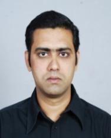

| Assistant Professor |
|---|
 |
Head of the Department
Education : Ph.D (IICT, Hyderabad) Email : ravivarala@gmail.com |
| PROFESSIONAL EXPERIENCE |
|---|
- Teaching Experience:
- Working as Faculty Member, TS-IIIT Basara (RGUKT) from January 2011-till date ()
- Achievements: During my tenure in RGUKT till date, apart from teaching, I actively involved in collaborative research activities and produced 20 publications (16 as corresponding author and 4 as member of team) and presented/attended in 22 national seminars or conferences.
- Visiting Researcher:
- University of Sau Paulo, IFSC-Sao Carlos, Brazil (FAPESP): From Mar’ 2015 to Mar’2016 (World Reputation Ranking 70 among best universities, according to ‘The Times Higher Education’ 2013).
- Pharmaceutical Experience:
- Worked as ‘’Associate Scientist’’ in Laxai-Avanti Pharma & as ‘‘ Research Scientist’’ in Sapala Organics, Hyderabad during 2010-2011 (1 year)
- Postdoctoral Experience:
- ‘’Scientific Investigator’’/‘’Postdoctoral Research Associate’’ in FCT-University of New Lisbon, Portugal- January 2007 to December 2009 (3 years)
- Research Concepts:
- Synthetic strategies towards some indolocarbazol e alkalo ids such as Staurosporinone, K252d (potent anticancer drugs)
- Studies on Sigmatropic rearrangements
- Guiding young scholars in their daily research work
- Principal Investigator/Supervisors: Prof. Ana M. Lobo (Extract from Nobel Laureate Prof. Dr. D.H.R. Barton) and Prof. M. M. B. Marques
- IICT-Research Associate: July 2006 to December 2006
|
| ACADEMIC EXPERIENCE |
|---|
- Doctoral Experience: Ph.D in Chemistry (2006) from ‘Indian Institute of Chemical Technology’, Hyderabad (IICT-CSIR)-during May 2000 to July 2006. Title of Thesis: ‘’A Facile Synthesis of Biologically Active Phthalimides & Its’ Analogues- A Study’’ (Link: http://hdl.handle.net/123456789/1619 from http://www.csircentral.net/index.php/record/view/78721)
- Research Concepts:
- Synthesis of biologically relevant heterocyclic molecules pertaining to N-phthaloyl moiety
- Development of C-C, C-N, C-S and C-Hetero bond formation reactio:ns, synthetic methodologies and application to organic synthesis
- Research Supervisor: Dr. Srinivas R. Adapa, Director Grade Scientist-IICT, Retd.
- Post Graduation: M.Sc (Organic Chemistry), Kakatiya University campus: 1997-1999
(Ist Class)
- Graduation: B.Sc, Osmania University: 1993-1996 (Ist Class)
- Intermediate (10+2): Board of Intermediate: 1991-1993 (Ist Class with distinction)
- SSC: Board of Secondary Education: 1991 (Ist Class with distinction)
|
| AWARDS & ACCOMPLISHMENTS |
|---|
- APRJC Entrance examination-17th Rank (Andhra Pradesh)
- State level 107th Rank in B. Ed Entrance Examination (Ed CET)
- M.Sc (Chemistry) Entrance 3rd Rank (Kakatiya University), 2nd Rank (Nagarjuna University) and
13th Rank (Osmania University)
- IICT (CSIR)-Junior Research Fellowship (2000-2003) (2nd Rank in IICT-JRF Entrance Examination)
- CSIR-Senior Research Fellowship (2003-2006)
- FCT-UNL, Portugal - Postdoctoral Fellowship (Jan’2007 - Dec’2009)
- Research Papers Published in Journals (SCI-indexed)- 54. International (48) & National repute (03) till date apart from 1 e-Thesis, 1 Edited book & 2 Review Articles. First author in 27 research publications, 9 as second author and 16 as Corresponding author.
- Research papers presented/attended at symposia or conferences- 27. International (10) & National (17) till date (2 as ‘’Invited Speaker’’).
- Crossed 1175 citations for 32 articles identified as on Aug 25th 2016 (based on Thomson Reuters (formarly ISI) Web of Science), which itself merits the quality of basic research we carried out. h-index: 16 (Average citations per publication: 34.44, Researcher ID: H-2385-2013)
- 1523 citations so far for 53 articles identified (based on Google Scholar till May 20th 2017): h-index: 18 and i10 index: 30
- Tetrahedron Letters (2003-2006) Most cited paper (for Tetrahedron Lett. 2003, 44, 5115-5119)
- Most-Cited Articles: 2005 - Organic Process Research & Development (for OPRD, 2005, 9/6, 853-856)
- CAS Science Spotlight Most Requested Journal Articles 2Q 2007 (for J. Org. Chem., 2006, 71/21, 8283-8286)
- Most cited paper (for Chin. J. Chem.2006, 24, 807-810)
|
| HIGHLIGHTS |
|---|
- Over fifteen years of research experience in synthetic organic chemistry
- Reasonable background in current chemistry trends
- Experience in writing scientific manuscripts
- Training graduate and undergraduate students with their daily research problems during PhD and Post-doc period
- Well trained in multi-step organic synthesis utilizing modern structural elucidation techniques
- Operational experience of modern laboratory instruments: IR, UV, NMR and Polarimeter
- Familiar with online database searching (Web of Knowledge, Beilstein, SciFinder, Isis-based software) for use in the selection and planning of synthetic routes
- Demonstrated success in technical proficiency, scientific creativity, collaboration with others and independent problem solving skills
- Can teach chemistry with utmost care and in simplified manner. Exploring new TLET/SSDP
and curriculum development programmes
|
| MEMBER OF EDITORIAL/REVIEWER BOARD & CONFERENCES |
|---|
- Regular reviewer for esteemed journals such as Tetrahedron Letters, Tetrahedron, Synlett, Journal of Organic Chemistry, Letters in Organic Chemistry, Australian Journal of Chemistry, Montasch Chemie, International Journal of Organic Chemistry, etc. since 2007
- Editorial board member of Bulletin of Organic Chemistry ((http://borgchem.com/editor.html) and Blue Ocean Research Journals (http://www.borjournals.com/Editorial_board.html), SciKnow Publications (http://www.sciknow.org/journals/show/id/ojoc, Open Journal of Organic Chemistry), Bioinfo Publications), Indian Journal of Advanced Chemistry (http://www.gbspublisher.com/ijac.htm, GBS Publishers), American Open Organic Chemistry Journal, European Journal of Academic Essays (http://euroessays.org/?page_id=203), IJRACET (http://www.ijraset.com/editorial-board.php?A2), Chemical Engineering: An International Journal (http://airccse.com/ceij/editorial.html), Frontiers in Heterocyclic Chemistry (Science PG), IJTIMES etc.
- Review Board member of IASIR Journals (http://iasir.net/boardmembers.html), IJETCAS http://iasir.net/ijetcasboardmembers.html), WASET (World Academy of Science Engineering & Technology), SciKnow Publications (Open Journal of Organic Chemistry), and IJRCE (http://www.ijrce.org), IJSER (http://www.ijser.org/editorial-board.aspx), AIJRST (http://iasir.net/aijrstemboardmembers.html) Mediterranean Journal of Chemistry, Chemical Science Review Letters and Global Journals.
- Guest Reviewer/Technical Editor for ‘International Journal of Organic Chemistry’
- Executive Editor to ‘’International Journal of Chemical Research’’
- Associate Editor to ‘’AOCSR’’ (Annalen der Chemischen Forschung)
- International Conference Committee member in ‘ICFAS 2014: XII International Conference on Fundamental and Applied Sciences’, Vienna, Italy, April 14-15, 2014 (https://www.waset.org/conference/2014/04/venice/ICFAS/committees)
- International Conference Committee member in ‘ICGC 2015: XIII International Conference on Green Chemistry’, San Fransisco, USA, June 7-8, 2015.
(http://www.waset.org/conference/2015/06/san-francisco/ICGC/committees)
- International Conference Committee member in ICQCM 2016: 18th International Conference on Quantum Chemistry and Mechanics, Vienna, Austria, June 16-17, 2016
(https://www.waset.org/conference/2016/06/vienna/ICQCM/committees)
- International Conference Committee member in ICTCC 2016: 18th International Conference on Theoretical and Computational Chemistry, Zurich, Switzerland, Jan 12-13, 2016
(https://www.waset.org/conference/2016/01/zurich/ICTCC/committees)
- International Conference Committee member in ICOCC 2016: 18th International Conference on Organometallic Chemistry and Catalysis, Los Angeles, USA, Sep 22-23rd 2016
(https://www.waset.org/conference/2016/09/los-angeles/ICOCC/committees)
- International Conference Committee member in ICHEFCT 2016: 18th International Conference on Hydrogen Energy and Fuel Cells Technology, Amsterdam (Netherlands), Dec 1-2nd 2016
|
| MEMBER OF PROFESSIONAL ORGANIZTIONS |
|---|
- World Young Scientists Association (WAYS)/IUPAC
- Indian Science Congress Association (ISCA)-Life Member (L 22758)
- CRSI-Life Member (LM 1640)
- Association of Chemistry Teachers- Life Member (LM 1282)
- International Science Congress Association (FISCA): Fellow Member-246
- Indian Council of Chemists
|
| ADMINISTRATIVE/NON-TEACHING EXPERIENCE |
|---|
- As ‘Central Coordinator’- Department of Chemistry (RGUKT) since Dec’ 2013 to Dec’ 2014.
- As ‘Department Coordinator’/’Head’ - Department of Chemistry (AP-IIIT Basara campus) since 15’ Nov 2011 to March 2015. (31/2 years) and from June 2016 onwards until date.
- NSS Coordinator during 2011-‘12 (AP-IIIT Basara campus)
- Editorial & Advisory Board for various Scientific Journals
- As ‘Research Scientist’ in Pharmaceutical Industry (2010-2011)
- As ‘Scientific Investigator’ in FCT-UNL, Portugal during 2007-2009
- Paper setter for Examination of RGUKT Faculty selection during 2013
- As Ph.D pre-Viva/M.Sc. Practicals Examiner-SRTMU, Nanded (2012-14)
- Faculty Incharge of Research Programme (AP-IIIT Basara Campus from 2013-till date) and now it is converted as Head-R&D Cell (since 23-08-2014 onwards)
- Committee member for Security Operations (AP-IIIT Basara Campus during 2013-2014)
- As ‘External paper valuator’ for M. Sc OC/PC Practicals, Telengana University (May 2014/Aug’ 2015)
- Committee chair member for scrutinizing the contract lecturers’ applications, Dt.31-03.2015, Rect.1/2016, RGUKT-Basar
- As ‘External paper valuator’ for M. Sc OC/PC Practicals, Telangana University (May 2014/Aug’ 2015/Apr-May 2017)
|
| TRAINING COURSES ATTENDED |
|---|
- Participated in AICTE sponsored ‘’Faculty Development Programme’’ (FDP) conducted by Hindu College of Pharmacy, Guntur during 20th April-4th May 2013 (Theme: Current activities and future perspective in pharmaceutical chemistry research and development).
- Participated in UGC-Academic Staff College ‘’Orientation Programme’’ held from May 15th to June 11th, 2013, organized by Bharathiyar University, Coimbatore, Tamilnadu.
|
| ORGANIZATIONAL EXPERIENCE |
|---|
- As 'Convener' in 'One Day Seminar' on the occasion of 'National Science Day' Celebrations (Feb 28th 2017)
- As ‘Co-Convener’ in ‘’Science & Technology Fair’’ by AP-IIIT Basara, RGUKT during March 11-12th, 2013
- As ‘Convener’ in two days ‘National Symposium’ on ‘Recent Advances in Chemical and Material Sciences’, being organized by Department of Chemistry, RGUKT Basar and TSCHE (RACMS 2016) during 20-21st Aug 2016 (http://www.rgukt.ac.in/racms2016.html)
|
| RESEARCH PROJECTS |
|---|
- As ‘Visiting Scientist' funded by FAPESP-Brazil Research Project (No. 2014/25784-7) Proposal as ‘Principal Investigator’ worth 50 Lakhs/- INR. Link: http://www.bv.fapesp.br/en/auxilios/88810/strategies-towards-the-n-glycosylation-of-indolocarbazole-alkaloids-and-interaction-with-model-cell/
Or
http://www.bv.fapesp.br/en/pesquisa/?q=varala&index=
- As ‘Co-investigator’ in FCT-Portugal government funded research project entitled
‘‘Synthetic startegies towards some indolocarbazoloe alkaloids,’’ worth 1,30, 200 BR/-.
- As ‘Research Scholar’ in Sponsored Projects at IICT
- 50/-Lakhs project entitled ‘’Synthesis and process development of TBBA (Tetrabromo Bisphenol-A)’’, prominent flame- retardant, under IICT, Hyderabad- Karwar industries, India Collaboration.
- 20/-Lakhs research project for the process and development of p-Methoxy phenylaceticacid (PMPAA), a versatile intermediate used extensively in synthetic organic chemistry, under IICT, Hyderabad-Vinathi Organics, India Collaboration.
|
| RESEARCH CONTRIBUTIONS |
|---|
- For the first time, Biginelli reaction was carried out at ambient temperature using bismuth triflate (according to literature reports)
- For the first time, ligand free, base free Zn(OAc)2.2H2O-catalyzed synthesis of propargylamines (three component system) was achieved by us.
- High overall yield for the two-step short synthesis of thalidomide (anti-leprosy drug) was achieved using phthaloyl chemistry.
- Synthesis of biologically active quinolines, coumarines, benzimidazoles, benzodiazepines, dihydropyrimidines, flavones, etc. using suitable catalysts was achieved.
- Convenient protection strategies to alcohols, phenols, amines are achieved.
- For the first time, transition metal free aryl selenylation, aryl sulfides, amination of arylhalides was achieved using CsOH.H2O.
- 81% of our work published from IICT-Hyderabad (Ph.D tenure) has been cited in ‘Chem Inform’ Journal (Wiley). ChemInform criteria for Literature Selection and Abstracts: Abstracts are provided from approximately 200 journals, whose selection is supervised by advisory board. Abstract coverage is extended mainly to publications dealing with syntheses and preparative methods in organic chemistry and inorganic chemistry.
- Our Synlett article (Synlett 2003, 67-70) has been cited in text book entitled "Name Reactions-A Collection of Detailed Reaction Mechanisms" (2nd edition) - J. Jack Li, Springer, 2003, Page 34.
- Our Tet. Lett. 2007 (Proline) and Chem. Pharm. Bull. 2007 (Zinc prolinate) articles have been cited in ‘’Theilheimer's Synthetic Methods of Organic Chemistry’’, Volume 72, edited by G. Tozer-Hotchkiss, Karger, 2008, pages 135 and 268.
|
| RESEARCH SUPERVISON |
|---|
- Ph.D Scholars : 2 (One has already submitted in March 2017) from JNTU, Hyderabad
- Co-curricular Activities:
- ‘Social worker’ and active participant in health and science awareness programmes conducted in rural areas.
- Countries visited-Singapore, Brazil, Portugal, Germany, France, Italy, Spain, Netherlands, Switzerland, Nepal, Ethiopia, UAE and United Kingdom.
- Research collaboration:
- Indian Institute of Chemical Technology (Hyderabad-CSIR)
- The Swami Ramanand Teerth Marathwada University (Nanded, Maharashtra)
- Acharya Nagarjuna University (Guntur, AP)
- Osmania University (Hyderabad)
- Telangana University (Nizamabad, Telengana)
- Mahatma Gandhi University (Nalgonda, Telengana)
- JNTU, Hyderabad (Telengana)
- Krishna University (Krishna, AP)
- Vignan University (Guntur, Andhra Pradesh)
- King Saud University (Riyadh, Kingdom of Saudi Arabia)
- University of Sao Paulo (IFSC-Sao Carlos, Brazil)
- Gitam University, Hyderabad
|